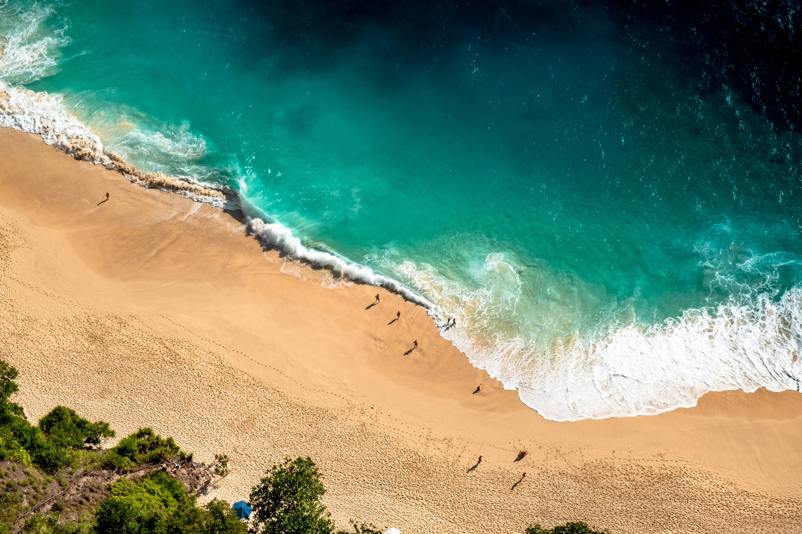

Tour Presentation

Day 1
Day 1
Welcome to Bali! The moment you step off the plane, you'll be greeted by our dedicated organizer, ready to assist you throughout your journey. We'll swiftly transfer you to your hotel, where you can settle in and take a moment to relax after your flight. As you unwind, you'll have the opportunity to meet and connect with the other participants of the tour, sharing in the excitement and anticipation for the adventures that await us.
Day 2
- Full-day exploration of Ubud, the cultural heart of Bali
- Visit the Sacred Monkey Forest Sanctuary and interact with playful macaques
- Explore the traditional art market and discover unique handicrafts
- Visit the Ubud Royal Palace and learn about its historical significance
- Participate in a Balinese cooking class to learn traditional recipes and techniques
- Return to the hotel for overnight stay

Monkey Forest
Monkey Forest
Day 1
Day 3
- Journey to the eastern part of Bali and immerse yourself in the captivating beauty and cultural wonders of this region.
- Begin your day with a visit to Lempuyang Temple, often referred to as the "Gateway to Heaven.
- Continue your journey to the Tirta Gangga Water Palace, a stunning royal water garden built by the Karangasem royal family.
- Afterward, make your way to Taman Ujung, also known as the "Water Palace." This majestic complex showcases a harmonious blend of Balinese and European architectural influences.
- As the day comes to a close, you'll return to your hotel with a newfound appreciation for Bali's cultural heritage and the breathtaking landscapes that make this island so unique.
Day 2
- Full-day exploration of Ubud, the cultural heart of Bali
- Visit the Sacred Monkey Forest Sanctuary and interact with playful macaques
- Explore the traditional art market and discover unique handicrafts
- Visit the Ubud Royal Palace and learn about its historical significance
- Participate in a Balinese cooking class to learn traditional recipes and techniques
- Return to the hotel for overnight stay
Monkey Forest
Day 1